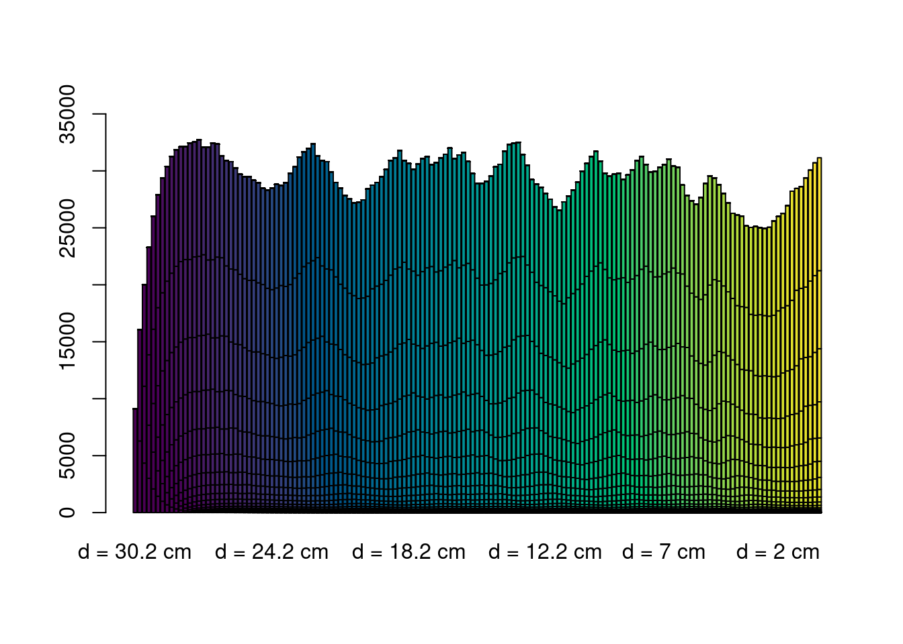
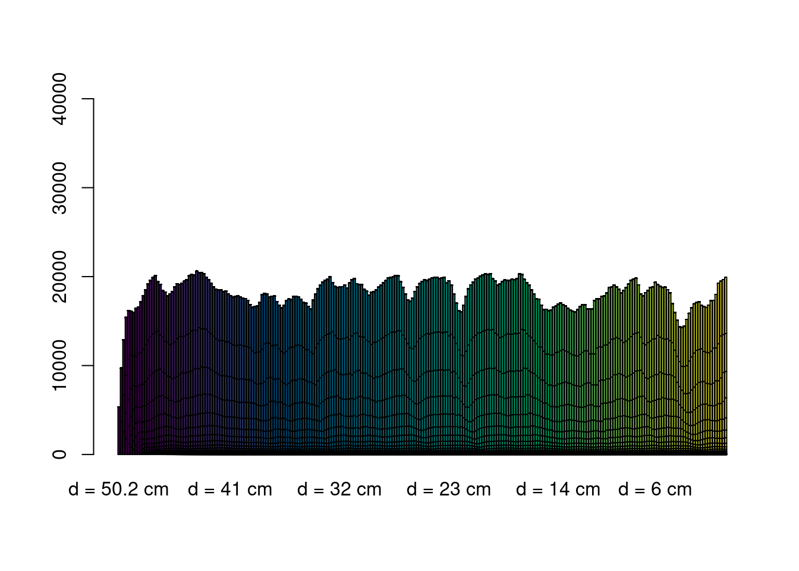
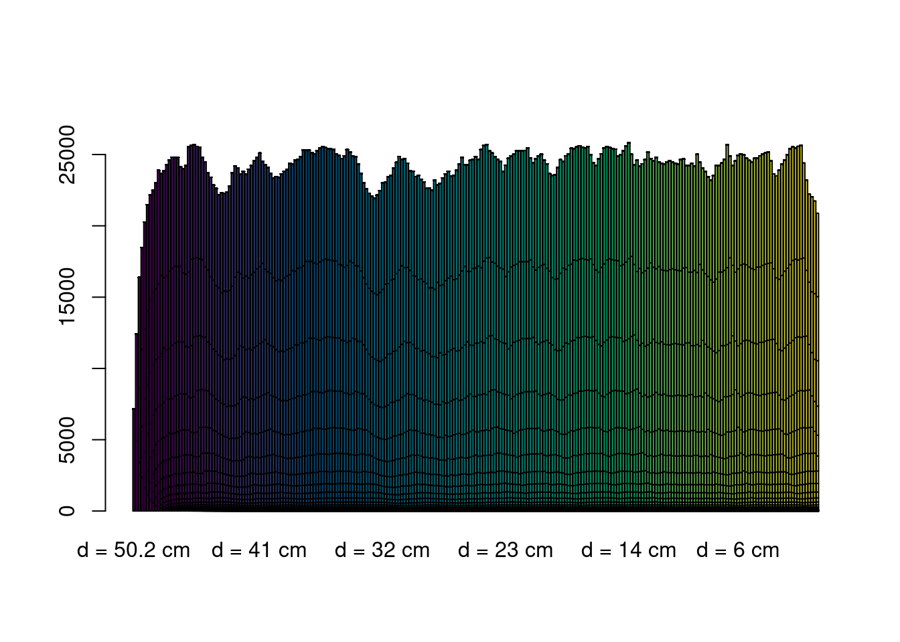
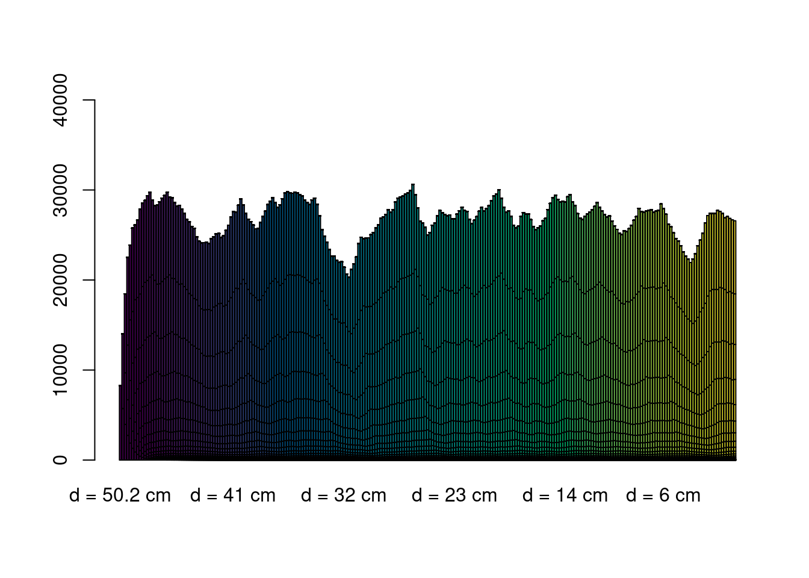
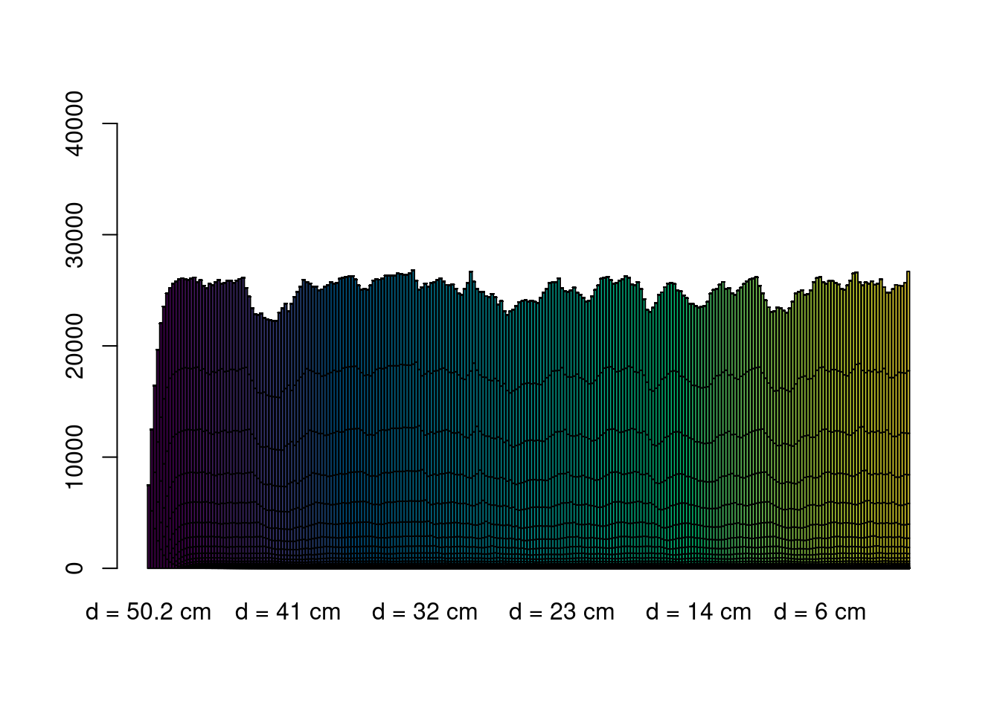
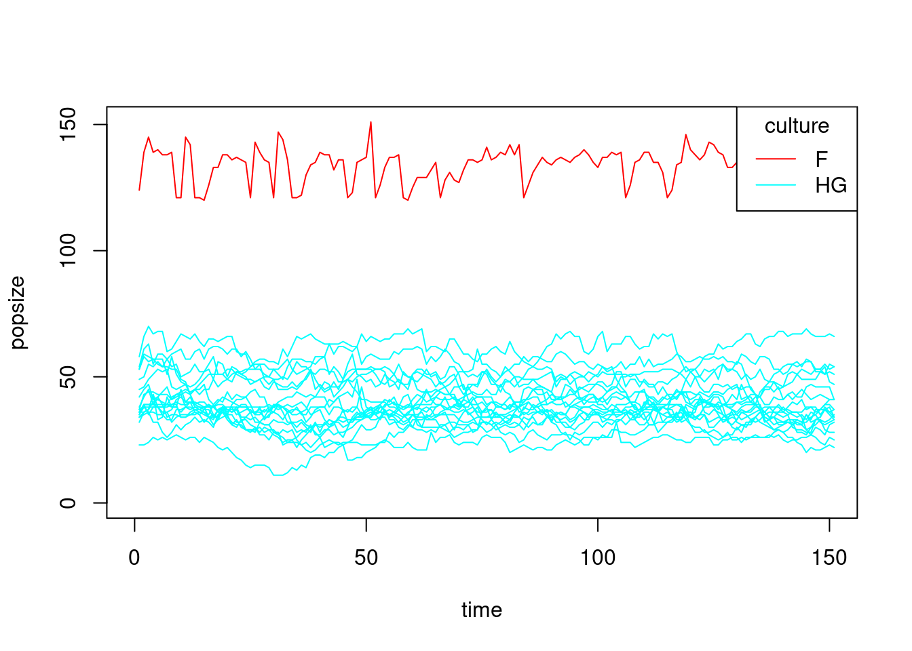
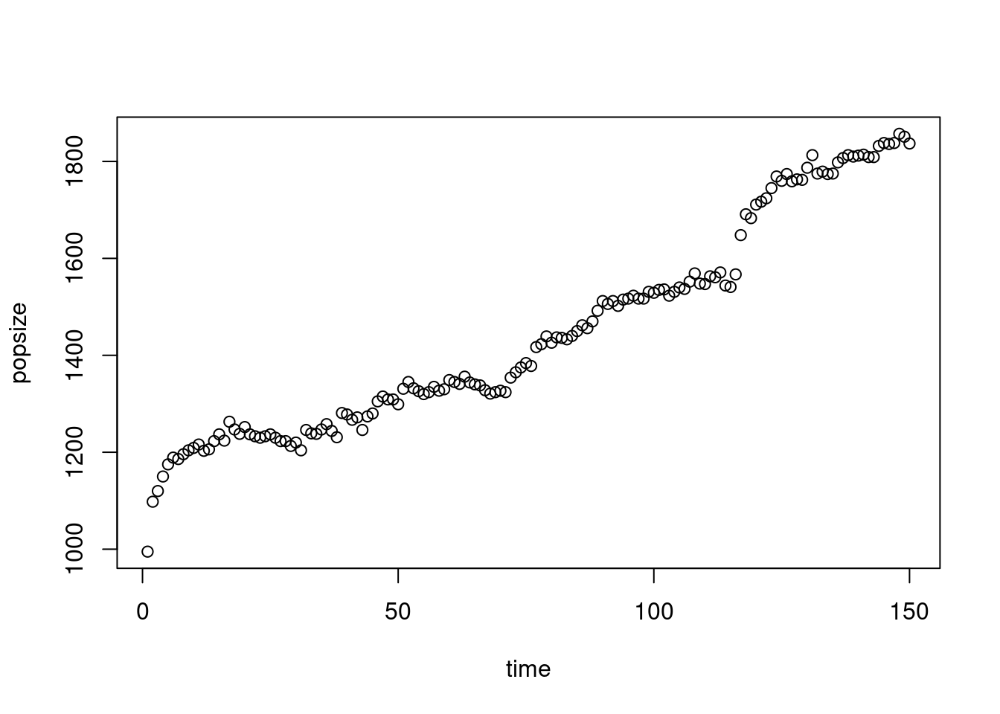
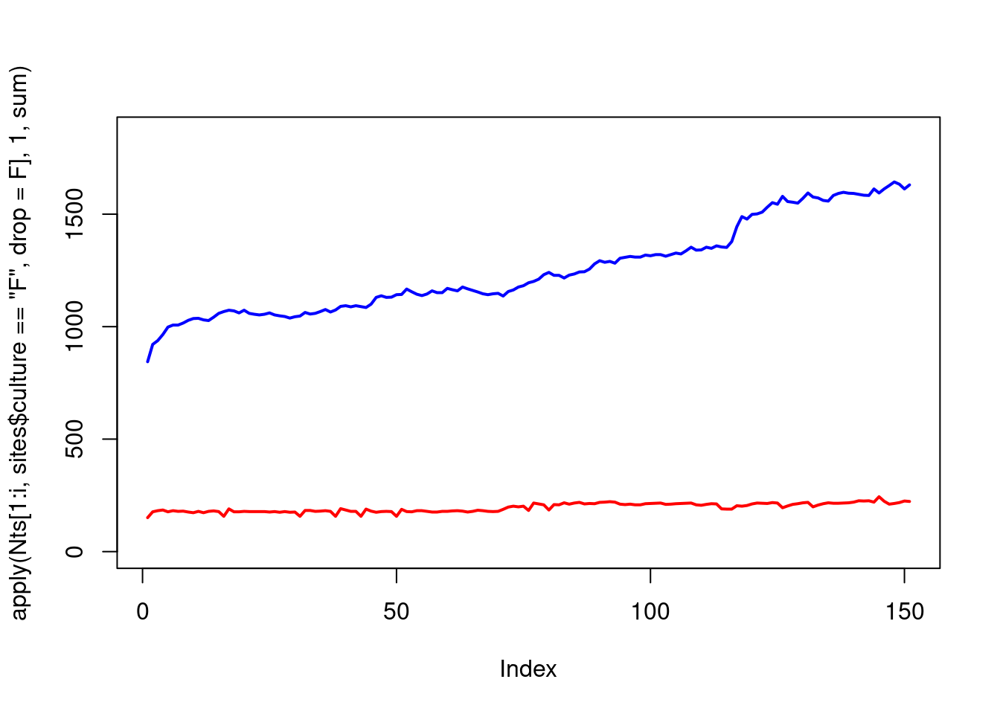
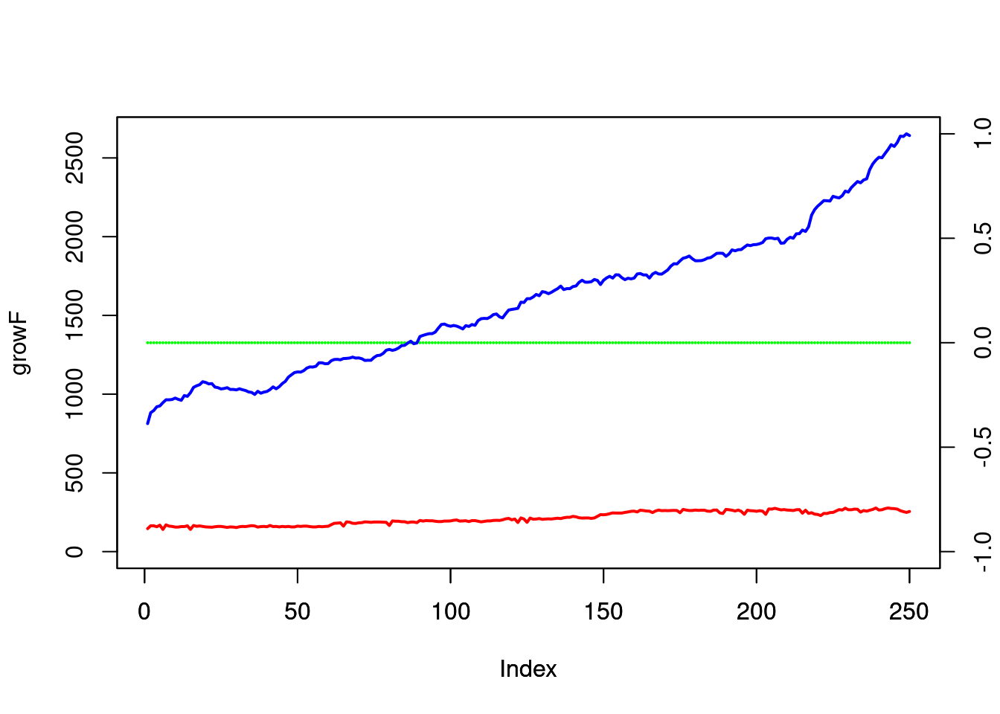

5 Main Simulation
5.1 Initial Parameters
We now have sites with two cultures, a environment and function to make population growth, migrate and engages into wars. Each function depends on a lot of paramaters, some have been reviewd before other are explain in the help of each function. Often the parameters can differs between the two cultures. He we gave a list of parameters, close to those used during the Archaeoriddle challenge:
#initialisation
Kbase=c("HG"=45,"F"=120) #difference in K for the two cultures use and defined before ; will be use in simulation to define new site
# spatial penality for cultural extentions, ie for population to move out of initial site : lower, bigger penality
cul_ext <- c("HG"=7, "F"=6)
# penality of occupational area ie how hard it is to come close to your site ; if low, other sites can come close
penal_cul <- c("HG"=4, "F"=5)
# proba to give birth every year
prob_birth <- c("HG"=0.3, "F"=0.5)
# proba to die when pop > K
prob_survive <- c("HG"=0.8, "F"=0.6)
# proba to create new settlement when Ne > K
prob_split <- c("HG"=0.2, "F"=0.6)
# how big the group of migrant should be to create a new city vs
# migrate to a existing one
minimals <- c("HG"=0.14, "F"=0.20)
# prob to migrate to existing settlement when Ne > K
prob_move <- c("HG"=0.2,"F"=0.1)Let’s see our raster map again, and put the sites on top, with their ids and showing there initial population size:
plotMap(height.ras,height.wat,paste0("year ", 0))
plot(sites, pch=21, add=T, bg=rainbow(2, alpha=0.6)[as.factor(sites$culture)],cex=(1+Nts[1,]/100))
text(sites,pos=3)
The run_simulation function will take the raster data and parameters for defined before for the two different cultures and run for the specified number of years ts (250).
It will then call the functions described above to model contacts between sites, the outcomes of fights and migrations. If you want
5.2 Algorithm
The general organisation of the algorithm is as follow:
initialisation for all sites s: N_s <- growth(N_s) if(N_s>K_s): moving people: if( N_s - K-S > min_s * K_s and probsplit_s): create new city: find the closest most attractive spot and move there else if(proba move ): migration war(s)
1. ** initialisation **
2. for (i in 2:(ts+1))
inactives <- (Nts[i-1,]==0)
for ( s in sample(seq_along(sites)[!inactives]) : #among all active site
N_s <- Gpd()
if $N_s> K_s$ :
migrants <- newN - round(Ks[[s]]*0.9)
if (migrants >= (minimals[sites$culture[s]]*sites$Ks[s]) & runif(1)<prob_split[sites$culture[s]] ){
#if subpopulation > 10 people, 10% chance of creation of a new city
infarea <- (sqrt(tmp)+penal_cul[cultures]) * buffersettl
buffersize <- rnorm(length(infarea), infarea, infarea * 0.1)
buffersize[tmp==0] <- 0
territory <- erase(viable, buffer(sites, buffersize))
if( length(territory)>0 ){
##select a new site given its distance to the old one and the ressourcesource available in ressources
d2 <- logisticdecay( sites[s], dem, x=20000*cul_ext[sites$culture[s]])
w <- (0.7 * d2 + 0.3*ressources) / (0.7*minmax(d2)[2] + 0.3*minmax(ressources)[2])
new_site <- spatSample(
x=mask(
w * logisticdecay(sites[s], dem, k=0.00002,
x=20000*cul_ext[sites$culture[s]]),
territory),
size=1, method="weights", xy=T)[1:2]
new_site <- vect(new_site, geom=c("x","y"))
if ( length(new_site)>0 & all(!is.na(crds(new_site))) ){
##add new site to site listes
Ips[[length(Ips)+1]] <- initpopstruc(n=migrants) #initialise a fake populaition, will be updated by real migrants later
new_site$culture <- sites$culture[s]
new_site$Ks <- round(initKs(
Kbase, sites=new_site, ressources,
sizeex="F", rate=0.45))
sites <- rbind(sites, new_site)
Ks[length(Ks)+1] <- new_site$Ks
}
}
}
## if no creation of new city happen, there is a certain probability that people will move
if( length(new_site)==0 && runif(1) < prob_move[sites$culture[s]] ){
#migration to existing site
att <- extract(ressources,sites)[,2]
space <- sites$Ks - (Nts[i-1,] + migrants)
dis <- extract(logisticdecay(sites[s], dem, k=0.00002, x=1), sites)[,2]
attractivity <- att * space * dis
#attractivity=attractivity*(1+10*(sites$culture[s]==sites$culture)) #4 times more likely to go to similar culture
attractivity[s] <- min(attractivity)-1
attractivity <- exp(attractivity)/sum(exp(attractivity))
attractivity[Nts[i-1,]<10] <- 0
attractivity[sites$culture!=sites$culture[s]] <- 0
if(any(is.na(attractivity))){
print(attractivity)
attractivity[is.na(attractivity)] <- 0
}
city <- sample(size=1, x=seq_along(sites), prob=attractivity)
Nts[i,city] <- Nts[i-1,city] + migrants
}
if( havemoved ){
Ips[c(s,city)] <- changePopSize( loosingPop=Ips[[s]], winingPop=Ips[[city]], size=migrants)
newN <- newN - migrants
}
}
Nts[i,s] <- newN
}
## WAR =======================
potentialfighters <- which(sites$culture=="F" & Nts[i,]>50)
for (s in sample(x=potentialfighters, size=round(length(potentialfighters)*0.1))){
buff <- bufferatack
potentialvictims <- which(sites$culture !=sites$culture[s] & Nts[i,]>0)
clash <- whotouch(s, sites, Ne=Nts[i,], buffersize=buff)
if(length(clash)>0 && !is.na(clash)){
if(length(clash) == 1){
attack <- clash
} else {
attack <- sample(clash, 1)
}
newns <- fightbetterloss(Ne=Nts[i,], a=s, b=attack)
casualties <- sum(Nts[i, c(s,attack)] - newns[c(s,attack)])
warcasualties[i] <- casualties
sizew <- casualties^2/4000
warpoints(sites, s, attack, Ne=Nts[i,],
buffersize=buff, sizewar=sizew+0.5)
#effectively kill people in population (should be done taking into account age pyramid to be more realistic)
Ips[[s]] <- changePopSize(loosingPop=Ips[[s]],
size=(Nts[i,s] - newns[s]))
Ips[[attack]] <- changePopSize(loosingPop=Ips[[attack]],
size=(Nts[i, attack] - newns[attack]))
Nts[i,] <- newns
}
}
return(list(Nts=Nts, warcasualties=warcasualties, Ips=Ips, sites=sites))
}We wrapped all this in a function, run_simulation that return a list of object. Let see one simple example:
ts <- 250 # we keep using 250 time steps.
onesimu <- run_simulation(
sites=sites, viable=viable, dem=height.ras,
ressources=ress,
water=height.wat,
foldervid="nan",
visu=F, visumin=F,
ts=ts, #length of simulation in year
Kbase=c("HG"=35, "F"=110), #difference in K for the two cultures
cul_ext=c("HG"=7, "F"=6), #spatial penality to extent: lower, bigger penality
penal_cul=c("HG"=4, "F"=5), #penality of occupational area: low, other sites can cam close
prob_birth=c("HG"=0.3, "F"=0.5), #proba of giving birth every year
prob_survive=c("HG"=0.8, "F"=0.65), #proba of dying when pop > K
prob_split=c("HG"=0.5, "F"=0.6), #proba of creating a new settlement when Ne > K
minimals=c("HG"=0.14,"F"=0.20), #how big the group of migrant should be to create a new city vs migrate to a existing one
bufferatack=500, #distance max around which settlement can fight
prob_move=c("HG"=0.2, "F"=0.1) #proba of migrating to existing settlement when Ne > K
)
## |---------|---------|---------|---------|========================================= |---------|---------|---------|---------|========================================= |---------|---------|---------|---------|========================================= |---------|---------|---------|---------|========================================= |---------|---------|---------|---------|========================================= |---------|---------|---------|---------|========================================= |---------|---------|---------|---------|========================================= |---------|---------|---------|---------|========================================= |---------|---------|---------|---------|========================================= |---------|---------|---------|---------|========================================= |---------|---------|---------|---------|========================================= |---------|---------|---------|---------|========================================= |---------|---------|---------|---------|========================================= |---------|---------|---------|---------|========================================= |---------|---------|---------|---------|========================================= |---------|---------|---------|---------|========================================= |---------|---------|---------|---------|========================================= |---------|---------|---------|---------|========================================= |---------|---------|---------|---------|========================================= |---------|---------|---------|---------|========================================= |---------|---------|---------|---------|========================================= |---------|---------|---------|---------|========================================= |---------|---------|---------|---------|========================================= |---------|---------|---------|---------|========================================= |---------|---------|---------|---------|========================================= |---------|---------|---------|---------|========================================= |---------|---------|---------|---------|========================================= |---------|---------|---------|---------|========================================= |---------|---------|---------|---------|========================================= |---------|---------|---------|---------|========================================= |---------|---------|---------|---------|========================================= |---------|---------|---------|---------|========================================= |---------|---------|---------|---------|========================================= |---------|---------|---------|---------|========================================= |---------|---------|---------|---------|========================================= |---------|---------|---------|---------|========================================= |---------|---------|---------|---------|========================================= |---------|---------|---------|---------|========================================= |---------|---------|---------|---------|========================================= |---------|---------|---------|---------|========================================= |---------|---------|---------|---------|========================================= |---------|---------|---------|---------|========================================= |---------|---------|---------|---------|========================================= |---------|---------|---------|---------|========================================= |---------|---------|---------|---------|========================================= |---------|---------|---------|---------|========================================= |---------|---------|---------|---------|========================================= |---------|---------|---------|---------|========================================= |---------|---------|---------|---------|========================================= |---------|---------|---------|---------|========================================= |---------|---------|---------|---------|========================================= |---------|---------|---------|---------|========================================= |---------|---------|---------|---------|========================================= |---------|---------|---------|---------|========================================= |---------|---------|---------|---------|========================================= |---------|---------|---------|---------|========================================= |---------|---------|---------|---------|========================================= |---------|---------|---------|---------|========================================= |---------|---------|---------|---------|========================================= |---------|---------|---------|---------|========================================= |---------|---------|---------|---------|========================================= |---------|---------|---------|---------|========================================= |---------|---------|---------|---------|========================================= |---------|---------|---------|---------|========================================= |---------|---------|---------|---------|========================================= |---------|---------|---------|---------|========================================= |---------|---------|---------|---------|========================================= |---------|---------|---------|---------|========================================= |---------|---------|---------|---------|========================================= |---------|---------|---------|---------|========================================= |---------|---------|---------|---------|========================================= |---------|---------|---------|---------|========================================= |---------|---------|---------|---------|========================================= |---------|---------|---------|---------|========================================= |---------|---------|---------|---------|========================================= |---------|---------|---------|---------|========================================= |---------|---------|---------|---------|========================================= |---------|---------|---------|---------|========================================= |---------|---------|---------|---------|========================================= |---------|---------|---------|---------|========================================= |---------|---------|---------|---------|========================================= |---------|---------|---------|---------|========================================= |---------|---------|---------|---------|========================================= |---------|---------|---------|---------|========================================= |---------|---------|---------|---------|========================================= |---------|---------|---------|---------|========================================= |---------|---------|---------|---------|========================================= |---------|---------|---------|---------|========================================= |---------|---------|---------|---------|========================================= |---------|---------|---------|---------|========================================= |---------|---------|---------|---------|========================================= |---------|---------|---------|---------|========================================= |---------|---------|---------|---------|========================================= |---------|---------|---------|---------|========================================= |---------|---------|---------|---------|========================================= |---------|---------|---------|---------|========================================= |---------|---------|---------|---------|========================================= |---------|---------|---------|---------|========================================= |---------|---------|---------|---------|========================================= |---------|---------|---------|---------|========================================= |---------|---------|---------|---------|========================================= |---------|---------|---------|---------|========================================= |---------|---------|---------|---------|========================================= |---------|---------|---------|---------|========================================= |---------|---------|---------|---------|========================================= |---------|---------|---------|---------|========================================= |---------|---------|---------|---------|========================================= |---------|---------|---------|---------|========================================= |---------|---------|---------|---------|========================================= |---------|---------|---------|---------|========================================= |---------|---------|---------|---------|========================================= |---------|---------|---------|---------|========================================= |---------|---------|---------|---------|========================================= |---------|---------|---------|---------|========================================= |---------|---------|---------|---------|========================================= |---------|---------|---------|---------|========================================= |---------|---------|---------|---------|========================================= |---------|---------|---------|---------|========================================= |---------|---------|---------|---------|========================================= |---------|---------|---------|---------|========================================= |---------|---------|---------|---------|========================================= |---------|---------|---------|---------|========================================= |---------|---------|---------|---------|========================================= |---------|---------|---------|---------|========================================= |---------|---------|---------|---------|========================================= |---------|---------|---------|---------|========================================= |---------|---------|---------|---------|========================================= |---------|---------|---------|---------|========================================= |---------|---------|---------|---------|========================================= |---------|---------|---------|---------|========================================= |---------|---------|---------|---------|========================================= |---------|---------|---------|---------|========================================= |---------|---------|---------|---------|========================================= |---------|---------|---------|---------|========================================= |---------|---------|---------|---------|========================================= |---------|---------|---------|---------|========================================= |---------|---------|---------|---------|========================================= |---------|---------|---------|---------|========================================= |---------|---------|---------|---------|========================================= |---------|---------|---------|---------|========================================= |---------|---------|---------|---------|========================================= |---------|---------|---------|---------|========================================= |---------|---------|---------|---------|========================================= |---------|---------|---------|---------|========================================= |---------|---------|---------|---------|========================================= |---------|---------|---------|---------|========================================= |---------|---------|---------|---------|========================================= |---------|---------|---------|---------|========================================= |---------|---------|---------|---------|========================================= |---------|---------|---------|---------|========================================= |---------|---------|---------|---------|========================================= |---------|---------|---------|---------|========================================= |---------|---------|---------|---------|========================================= |---------|---------|---------|---------|========================================= |---------|---------|---------|---------|========================================= |---------|---------|---------|---------|========================================= |---------|---------|---------|---------|========================================= |---------|---------|---------|---------|========================================= |---------|---------|---------|---------|========================================= |---------|---------|---------|---------|========================================= |---------|---------|---------|---------|========================================= |---------|---------|---------|---------|========================================= |---------|---------|---------|---------|========================================= |---------|---------|---------|---------|========================================= |---------|---------|---------|---------|========================================= |---------|---------|---------|---------|========================================= |---------|---------|---------|---------|========================================= |---------|---------|---------|---------|========================================= |---------|---------|---------|---------|========================================= |---------|---------|---------|---------|========================================= |---------|---------|---------|---------|========================================= |---------|---------|---------|---------|========================================= |---------|---------|---------|---------|========================================= |---------|---------|---------|---------|========================================= |---------|---------|---------|---------|========================================= |---------|---------|---------|---------|========================================= |---------|---------|---------|---------|========================================= |---------|---------|---------|---------|========================================= |---------|---------|---------|---------|========================================= |---------|---------|---------|---------|========================================= |---------|---------|---------|---------|========================================= |---------|---------|---------|---------|========================================= |---------|---------|---------|---------|========================================= |---------|---------|---------|---------|========================================= |---------|---------|---------|---------|========================================= |---------|---------|---------|---------|========================================= |---------|---------|---------|---------|========================================= |---------|---------|---------|---------|========================================= |---------|---------|---------|---------|========================================= |---------|---------|---------|---------|========================================= |---------|---------|---------|---------|========================================= |---------|---------|---------|---------|========================================= |---------|---------|---------|---------|========================================= |---------|---------|---------|---------|========================================= |---------|---------|---------|---------|========================================= |---------|---------|---------|---------|========================================= |---------|---------|---------|---------|========================================= |---------|---------|---------|---------|========================================= |---------|---------|---------|---------|========================================= |---------|---------|---------|---------|========================================= |---------|---------|---------|---------|========================================= |---------|---------|---------|---------|========================================= |---------|---------|---------|---------|========================================= |---------|---------|---------|---------|========================================= |---------|---------|---------|---------|========================================= |---------|---------|---------|---------|========================================= |---------|---------|---------|---------|========================================= |---------|---------|---------|---------|========================================= |---------|---------|---------|---------|========================================= |---------|---------|---------|---------|========================================= |---------|---------|---------|---------|========================================= |---------|---------|---------|---------|========================================= |---------|---------|---------|---------|========================================= |---------|---------|---------|---------|========================================= |---------|---------|---------|---------|========================================= |---------|---------|---------|---------|========================================= |---------|---------|---------|---------|========================================= |---------|---------|---------|---------|========================================= |---------|---------|---------|---------|========================================= |---------|---------|---------|---------|========================================= |---------|---------|---------|---------|========================================= |---------|---------|---------|---------|========================================= |---------|---------|---------|---------|========================================= |---------|---------|---------|---------|========================================= |---------|---------|---------|---------|========================================= |---------|---------|---------|---------|========================================= |---------|---------|---------|---------|========================================= |---------|---------|---------|---------|========================================= |---------|---------|---------|---------|========================================= |---------|---------|---------|---------|========================================= |---------|---------|---------|---------|========================================= |---------|---------|---------|---------|========================================= |---------|---------|---------|---------|========================================= |---------|---------|---------|---------|========================================= |---------|---------|---------|---------|========================================= |---------|---------|---------|---------|========================================= |---------|---------|---------|---------|========================================= |---------|---------|---------|---------|========================================= |---------|---------|---------|---------|========================================= |---------|---------|---------|---------|========================================= |---------|---------|---------|---------|========================================= |---------|---------|---------|---------|========================================= |---------|---------|---------|---------|========================================= |---------|---------|---------|---------|========================================= |---------|---------|---------|---------|========================================= |---------|---------|---------|---------|========================================= |---------|---------|---------|---------|========================================= |---------|---------|---------|---------|========================================= |---------|---------|---------|---------|========================================= |---------|---------|---------|---------|========================================= |---------|---------|---------|---------|========================================= |---------|---------|---------|---------|========================================= |---------|---------|---------|---------|========================================= |---------|---------|---------|---------|========================================= |---------|---------|---------|---------|========================================= |---------|---------|---------|---------|========================================= |---------|---------|---------|---------|========================================= |---------|---------|---------|---------|========================================= |---------|---------|---------|---------|========================================= |---------|---------|---------|---------|========================================= |---------|---------|---------|---------|========================================= |---------|---------|---------|---------|========================================= |---------|---------|---------|---------|========================================= |---------|---------|---------|---------|========================================= |---------|---------|---------|---------|========================================= |---------|---------|---------|---------|========================================= |---------|---------|---------|---------|========================================= |---------|---------|---------|---------|========================================= |---------|---------|---------|---------|========================================= |---------|---------|---------|---------|========================================= |---------|---------|---------|---------|========================================= |---------|---------|---------|---------|========================================= |---------|---------|---------|---------|========================================= |---------|---------|---------|---------|========================================= |---------|---------|---------|---------|========================================= |---------|---------|---------|---------|========================================= |---------|---------|---------|---------|========================================= |---------|---------|---------|---------|========================================= |---------|---------|---------|---------|========================================= |---------|---------|---------|---------|========================================= |---------|---------|---------|---------|========================================= |---------|---------|---------|---------|========================================= |---------|---------|---------|---------|========================================= |---------|---------|---------|---------|========================================= |---------|---------|---------|---------|========================================= |---------|---------|---------|---------|========================================= |---------|---------|---------|---------|========================================= |---------|---------|---------|---------|========================================= |---------|---------|---------|---------|========================================= |---------|---------|---------|---------|========================================= |---------|---------|---------|---------|========================================= |---------|---------|---------|---------|========================================= |---------|---------|---------|---------|========================================= |---------|---------|---------|---------|========================================= |---------|---------|---------|---------|========================================= |---------|---------|---------|---------|========================================= |---------|---------|---------|---------|========================================= |---------|---------|---------|---------|========================================= |---------|---------|---------|---------|========================================= |---------|---------|---------|---------|========================================= |---------|---------|---------|---------|========================================= |---------|---------|---------|---------|========================================= |---------|---------|---------|---------|========================================= |---------|---------|---------|---------|========================================= |---------|---------|---------|---------|========================================= |---------|---------|---------|---------|========================================= |---------|---------|---------|---------|========================================= |---------|---------|---------|---------|========================================= |---------|---------|---------|---------|========================================= |---------|---------|---------|---------|========================================= |---------|---------|---------|---------|========================================= |---------|---------|---------|---------|========================================= |---------|---------|---------|---------|========================================= |---------|---------|---------|---------|========================================= |---------|---------|---------|---------|========================================= |---------|---------|---------|---------|========================================= |---------|---------|---------|---------|========================================= |---------|---------|---------|---------|========================================= |---------|---------|---------|---------|========================================= |---------|---------|---------|---------|========================================= |---------|---------|---------|---------|========================================= |---------|---------|---------|---------|========================================= |---------|---------|---------|---------|========================================= |---------|---------|---------|---------|========================================= |---------|---------|---------|---------|========================================= |---------|---------|---------|---------|========================================= |---------|---------|---------|---------|========================================= |---------|---------|---------|---------|========================================= |---------|---------|---------|---------|========================================= |---------|---------|---------|---------|========================================= |---------|---------|---------|---------|========================================= |---------|---------|---------|---------|========================================= |---------|---------|---------|---------|========================================= |---------|---------|---------|---------|========================================= |---------|---------|---------|---------|========================================= |---------|---------|---------|---------|========================================= |---------|---------|---------|---------|========================================= |---------|---------|---------|---------|========================================= |---------|---------|---------|---------|========================================= |---------|---------|---------|---------|========================================= |---------|---------|---------|---------|========================================= |---------|---------|---------|---------|========================================= |---------|---------|---------|---------|========================================= |---------|---------|---------|---------|========================================= |---------|---------|---------|---------|========================================= |---------|---------|---------|---------|========================================= |---------|---------|---------|---------|========================================= |---------|---------|---------|---------|========================================= |---------|---------|---------|---------|========================================= |---------|---------|---------|---------|========================================= |---------|---------|---------|---------|========================================= |---------|---------|---------|---------|========================================= |---------|---------|---------|---------|========================================= |---------|---------|---------|---------|========================================= |---------|---------|---------|---------|========================================= |---------|---------|---------|---------|========================================= |---------|---------|---------|---------|========================================= |---------|---------|---------|---------|========================================= |---------|---------|---------|---------|========================================= |---------|---------|---------|---------|========================================= |---------|---------|---------|---------|========================================= |---------|---------|---------|---------|========================================= |---------|---------|---------|---------|========================================= |---------|---------|---------|---------|========================================= |---------|---------|---------|---------|========================================= |---------|---------|---------|---------|========================================= |---------|---------|---------|---------|========================================= |---------|---------|---------|---------|========================================= |---------|---------|---------|---------|========================================= |---------|---------|---------|---------|========================================= |---------|---------|---------|---------|========================================= |---------|---------|---------|---------|========================================= |---------|---------|---------|---------|========================================= |---------|---------|---------|---------|========================================= |---------|---------|---------|---------|========================================= |---------|---------|---------|---------|========================================= |---------|---------|---------|---------|========================================= |---------|---------|---------|---------|========================================= |---------|---------|---------|---------|========================================= |---------|---------|---------|---------|========================================= |---------|---------|---------|---------|========================================= |---------|---------|---------|---------|========================================= |---------|---------|---------|---------|========================================= |---------|---------|---------|---------|========================================= |---------|---------|---------|---------|========================================= |---------|---------|---------|---------|========================================= |---------|---------|---------|---------|========================================= |---------|---------|---------|---------|========================================= |---------|---------|---------|---------|========================================= |---------|---------|---------|---------|========================================= |---------|---------|---------|---------|========================================= |---------|---------|---------|---------|========================================= |---------|---------|---------|---------|========================================= |---------|---------|---------|---------|========================================= |---------|---------|---------|---------|========================================= |---------|---------|---------|---------|========================================= |---------|---------|---------|---------|========================================= |---------|---------|---------|---------|========================================= |---------|---------|---------|---------|========================================= |---------|---------|---------|---------|========================================= |---------|---------|---------|---------|========================================= |---------|---------|---------|---------|========================================= |---------|---------|---------|---------|========================================= |---------|---------|---------|---------|========================================= |---------|---------|---------|---------|========================================= |---------|---------|---------|---------|========================================= |---------|---------|---------|---------|========================================= |---------|---------|---------|---------|========================================= |---------|---------|---------|---------|========================================= |---------|---------|---------|---------|========================================= |---------|---------|---------|---------|========================================= |---------|---------|---------|---------|========================================= |---------|---------|---------|---------|========================================= |---------|---------|---------|---------|========================================= |---------|---------|---------|---------|========================================= |---------|---------|---------|---------|========================================= |---------|---------|---------|---------|========================================= |---------|---------|---------|---------|========================================= |---------|---------|---------|---------|========================================= |---------|---------|---------|---------|========================================= |---------|---------|---------|---------|========================================= |---------|---------|---------|---------|========================================= |---------|---------|---------|---------|========================================= |---------|---------|---------|---------|========================================= |---------|---------|---------|---------|========================================= |---------|---------|---------|---------|========================================= |---------|---------|---------|---------|========================================= |---------|---------|---------|---------|========================================= |---------|---------|---------|---------|========================================= |---------|---------|---------|---------|========================================= |---------|---------|---------|---------|========================================= |---------|---------|---------|---------|========================================= |---------|---------|---------|---------|========================================= |---------|---------|---------|---------|========================================= |---------|---------|---------|---------|========================================= |---------|---------|---------|---------|========================================= |---------|---------|---------|---------|========================================= |---------|---------|---------|---------|========================================= |---------|---------|---------|---------|========================================= |---------|---------|---------|---------|========================================= |---------|---------|---------|---------|========================================= |---------|---------|---------|---------|========================================= |---------|---------|---------|---------|========================================= |---------|---------|---------|---------|========================================= |---------|---------|---------|---------|========================================= |---------|---------|---------|---------|========================================= |---------|---------|---------|---------|========================================= |---------|---------|---------|---------|========================================= |---------|---------|---------|---------|========================================= |---------|---------|---------|---------|========================================= |---------|---------|---------|---------|========================================= |---------|---------|---------|---------|========================================= |---------|---------|---------|---------|========================================= |---------|---------|---------|---------|========================================= |---------|---------|---------|---------|========================================= |---------|---------|---------|---------|========================================= |---------|---------|---------|---------|========================================= |---------|---------|---------|---------|========================================= |---------|---------|---------|---------|========================================= |---------|---------|---------|---------|========================================= |---------|---------|---------|---------|========================================= |---------|---------|---------|---------|========================================= |---------|---------|---------|---------|========================================= |---------|---------|---------|---------|========================================= |---------|---------|---------|---------|========================================= |---------|---------|---------|---------|========================================= |---------|---------|---------|---------|========================================= |---------|---------|---------|---------|========================================= |---------|---------|---------|---------|========================================= |---------|---------|---------|---------|========================================= |---------|---------|---------|---------|========================================= |---------|---------|---------|---------|========================================= |---------|---------|---------|---------|========================================= |---------|---------|---------|---------|========================================= |---------|---------|---------|---------|========================================= |---------|---------|---------|---------|========================================= |---------|---------|---------|---------|========================================= |---------|---------|---------|---------|========================================= |---------|---------|---------|---------|========================================= |---------|---------|---------|---------|========================================= |---------|---------|---------|---------|========================================= |---------|---------|---------|---------|========================================= |---------|---------|---------|---------|========================================= |---------|---------|---------|---------|========================================= |---------|---------|---------|---------|========================================= |---------|---------|---------|---------|========================================= |---------|---------|---------|---------|========================================= |---------|---------|---------|---------|========================================= |---------|---------|---------|---------|========================================= |---------|---------|---------|---------|========================================= |---------|---------|---------|---------|========================================= |---------|---------|---------|---------|========================================= |---------|---------|---------|---------|========================================= |---------|---------|---------|---------|========================================= |---------|---------|---------|---------|========================================= |---------|---------|---------|---------|========================================= |---------|---------|---------|---------|========================================= |---------|---------|---------|---------|========================================= |---------|---------|---------|---------|========================================= |---------|---------|---------|---------|========================================= |---------|---------|---------|---------|========================================= |---------|---------|---------|---------|========================================= |---------|---------|---------|---------|========================================= |---------|---------|---------|---------|========================================= |---------|---------|---------|---------|========================================= |---------|---------|---------|---------|========================================= |---------|---------|---------|---------|========================================= |---------|---------|---------|---------|========================================= |---------|---------|---------|---------|========================================= |---------|---------|---------|---------|========================================= |---------|---------|---------|---------|========================================= |---------|---------|---------|---------|========================================= |---------|---------|---------|---------|========================================= |---------|---------|---------|---------|========================================= |---------|---------|---------|---------|========================================= |---------|---------|---------|---------|========================================= |---------|---------|---------|---------|========================================= |---------|---------|---------|---------|========================================= |---------|---------|---------|---------|========================================= |---------|---------|---------|---------|========================================= |---------|---------|---------|---------|========================================= |---------|---------|---------|---------|========================================= |---------|---------|---------|---------|========================================= |---------|---------|---------|---------|========================================= |---------|---------|---------|---------|========================================= |---------|---------|---------|---------|========================================= |---------|---------|---------|---------|========================================= |---------|---------|---------|---------|========================================= |---------|---------|---------|---------|========================================= |---------|---------|---------|---------|========================================= |---------|---------|---------|---------|========================================= |---------|---------|---------|---------|========================================= |---------|---------|---------|---------|========================================= |---------|---------|---------|---------|========================================= |---------|---------|---------|---------|========================================= |---------|---------|---------|---------|========================================= |---------|---------|---------|---------|========================================= |---------|---------|---------|---------|========================================= |---------|---------|---------|---------|========================================= |---------|---------|---------|---------|========================================= |---------|---------|---------|---------|========================================= |---------|---------|---------|---------|========================================= |---------|---------|---------|---------|========================================= |---------|---------|---------|---------|========================================= |---------|---------|---------|---------|========================================= |---------|---------|---------|---------|========================================= |---------|---------|---------|---------|========================================= |---------|---------|---------|---------|========================================= |---------|---------|---------|---------|========================================= |---------|---------|---------|---------|========================================= |---------|---------|---------|---------|========================================= |---------|---------|---------|---------|========================================= |---------|---------|---------|---------|========================================= |---------|---------|---------|---------|========================================= |---------|---------|---------|---------|========================================= |---------|---------|---------|---------|========================================= |---------|---------|---------|---------|========================================= |---------|---------|---------|---------|========================================= |---------|---------|---------|---------|========================================= |---------|---------|---------|---------|========================================= |---------|---------|---------|---------|========================================= |---------|---------|---------|---------|========================================= |---------|---------|---------|---------|========================================= |---------|---------|---------|---------|========================================= |---------|---------|---------|---------|========================================= |---------|---------|---------|---------|========================================= |---------|---------|---------|---------|========================================= |---------|---------|---------|---------|========================================= |---------|---------|---------|---------|========================================= |---------|---------|---------|---------|========================================= |---------|---------|---------|---------|========================================= |---------|---------|---------|---------|========================================= |---------|---------|---------|---------|========================================= Not that we here use a larger bufferatack that generates more conflicts.
Source code
Check the code of the simulation functions here:Show code
Code
## Function 17. Change population sizes
changePopSize <- function(loosingPop, size, winingPop=NULL, new=F,
method="random", probs=dnorm,
prob.option=list("sd"=10, "mean"=22)) {
#print(dim(loosingPop))
#if(!is.null(winingPop))
# print(dim(winingPop))
#if(length(size)==0 || size==0)return(data.frame(Age=numeric(),Sex=character()))
if(nrow(loosingPop)==0){
kill <- 0
}else if(method=="random"){
kill <- tryCatch(
sample(x=1:nrow(loosingPop), size=size,
prob=probs(loosingPop$Age, mean=prob.option$mean, sd=prob.option$sd)),
error=function(e){
print(paste0("problem with population replacement for settlement of size:",
nrow(loosingPop), " need to loose ", size));0
}
)
}
#print(paste("diff",nrow(popdistrib)-size,"new",size))
if(!is.null(winingPop)){
winingPop <- rbind(winingPop, loosingPop[kill,])
}
loosingPop <- loosingPop[-kill,]
if(!is.null(winingPop))
return(list(loosingPop, winingPop))
else
return(loosingPop)
}
## Function 18. Check sites touching
whotouch <- function(i, sites, Ne, homophily=F, buffersize=200){
touch <- st_intersects(
st_make_valid(st_as_sf(buffer(sites[i], Ne[i] * buffersize+0.00001))),
st_make_valid(st_as_sf(buffer(sites, Ne * buffersize+0.00001))))
if( length(touch) > 0 ){
enemies <- unlist(touch)
if(homophily){
enemies <- enemies[enemies != i]
} else {
enemies <- enemies[sites$culture[enemies] != sites$culture[i]]
}
} else {
enemies <- NA
}
#after adding a small number to zero, does that means that often some zero size group may be taken as fighter? checking below if this happen
if(sum(Ne[enemies]==0)>0){
print("some already dead enemies")
print(which(Ne[enemies]==0))
enemies=enemies[Ne[enemies]>0]
}
return(enemies)
}
## Function 19. Model a simple fight
simplefight <- function(Ne, a, b){
if(runif(1) < Ne[a] / (Ne[a] + Ne[b])){
v <- a
l <- b
}
else{
v <- b
l <- a
}
# Keep the original pop sizes for reporting outcome
one <- Ne
# Update population sizes using a binomial
Ne[v] <- rbinom(n=1, prob=0.9, size=Ne[v])
Ne[l] <- rbinom(n=1, prob=0.4, size=Ne[l])
print(
paste("victory", v, "(", one[v], "-", Ne[v],") over", l,
"(",one[l],"-",Ne[l],"), total of: ", (one[v]-Ne[v]) + (one[l]-Ne[l]), "people"))
return(Ne)
}
## Function 20. Model fight with better probabilities
fightbetterloss <- function(Ne,a,b,log=F){
if( runif(1) < Ne[a]/(Ne[a] + Ne[b]) ){
v <- a
l <- b
}
else{
v <- b
l <- a
}
one <- Ne
Ne[v] <- rbinom(n=1, prob=1 - Ne[l]/(Ne[v] + Ne[l]), size=Ne[v])
Ne[l] <- rbinom(n=1, prob=1 - Ne[v]/(Ne[v] + Ne[l]), size=Ne[l])
if(log)print(paste0("victory ", v, "(", one[v], "-", Ne[v],") over ", l,
" (", one[l], "-", Ne[l], "), tot: ", (one[v]-Ne[v]) + (one[l]-Ne[l]), "losses"))
return(Ne)
}
## Function 21. Draw a war symbol where two clans are fighting
warpoints <- function(sites, a, b, Ne, buffersize=300, plot=T, sizewar=2){
meetpoints <- crop(
buffer(sites[a], 1+Ne[a] * buffersize),
buffer(sites[b], 1+Ne[b] * buffersize)
)
if( length(meetpoints)>0 ){
p <- spatSample(meetpoints, 1)
if(plot & length(p)>0){
plot(p, add=T, bg="red", pch="🔥", cex=sizewar,
col=adjustcolor("yellow", 0.1))
plot(p, add=T, bg="yellow", pch="⚔️" ,cex=sizewar)
}
return(p)
}
else return(NULL)
}
## Function 22. Run simulation
run_simulation <- function(cultures=NULL,
viable=NULL,
sites=NULL,
dem=NULL,
ressources=NULL,
water=NULL,
foldervid="pathtofinal",
visu=FALSE,
visumin=TRUE,
log=F,
ts=20000,
Kbase=c("HG"=35, "F"=120),
cul_ext=c("HG"=7, "F"=6),
penal_cul=c("HG"=4, "F"=5),
prob_birth=c("HG"=0.3, "F"=0.5),
prob_survive=c("HG"=0.8, "F"=0.6),
prob_split=c("HG"= .2, "F"=0.6),
prob_move=c("HG"=0.2, "F"=0.1),
minimals=c("HG"=.14, "F"=.20),
bufferatack=400,
buffersettl=2000,
Nts=NULL,
Ips=NULL
){
## Run stochastic process
wplot <- F
if(visumin || visu) wplot <- T
Ks <- sites$Ks
cultures <- sites$culture
if(is.null(Nts)){
INs <- round(runif(length(sites), 0.85, 0.95) * sites$Ks) #Population size at initialisation
Ips <- lapply(INs, initpopstruc) #initialise population structure for all sites
Nts <- initlistsites(Ips, ts=ts)
frame <- 0
mint <- 2
} else {##should check and test howto start back a simulation
mint <- nrow(Nts)
frame <- nrow(Nts)
}
### visualisation =====
if(!dir.exists(foldervid) & visu){
dir.create(foldervid)
}
###
warcasualties <- vector("integer", ts)
for (i in 2:(ts+1)){
countcult <- table(sites$culture[Nts[i-1, ] > 0])
if ( length(countcult) != 2 ) {
return(
list(Nts=Nts[,1:i],
warcasualties=warcasualties[1:i],
Ips=Ips,
sites=sites
)
)
}
if(log){
print(
paste("year", i, "total", sum(sapply(Ips,nrow)),
"with", length(sites), "sites (",
paste0(paste(names(countcult), countcult, sep=":"), collapse=","), ")"))
}
if (visumin){
### visualisation =====
frame <- frame+1
filename <- sprintf("map_%06d.png", frame)
png(file.path(foldervid,filename), width=800, height=800, pointsize=20)
plotMap(dem, water, paste0("year ",i))
########
}
inactives <- (Nts[i-1,]==0)
for ( s in sample(seq_along(sites)[!inactives]) ){
if ( visu ) {
### visualisation =====
frame <- frame+1
filename <- sprintf("map_%08d.png", frame)
png(file.path(foldervid,filename), width=800, height=800, pointsize=20)
plotMap(dem,water,paste0("year ", i))
########
}
city <- NULL
Ips[[s]] <- Gpd( #compute new population for the sites
Ips[[s]], K = Ks[[s]],
p_offspring = prob_birth[sites$culture[s]],
prob = prob_survive[sites$culture[s]]
)
newN <- nrow(Ips[[s]]) #count population size
if(newN >= (Ks[[s]])){ #if new population is more than carrying capacity: migration scenario
migrants <- newN - round(Ks[[s]]*0.9)
##Creation of new city
new_site <- NULL
#if(sites$culture[s]=="F")print(paste("possib",migrants, (minimals[sites$culture[s]]*sites$Ks[s])))
tmp <- Nts[i-1,]
tmp[Nts[i,] > 0] <- Nts[i, Nts[i,] > 0]
#tmp=tmp+sqrt(sites$Ks)
havemoved <- F
if (migrants >= (minimals[sites$culture[s]]*sites$Ks[s]) & runif(1)<prob_split[sites$culture[s]] ){
#if supopulation > 10 people, 10% chance of creation of a new city
#print(paste("look for new spot for ",migrants, "from site",s,"culture",sites$culture[s]))
#mean of area of influence
infarea <- (sqrt(tmp)+penal_cul[cultures]) * buffersettl
buffersize <- rnorm(length(infarea), infarea, infarea * 0.1)
buffersize[tmp==0] <- 0.00001
territory <- erase(viable, buffer(sites, buffersize))
if( length(territory)>0 ){
#print(paste("found new spot",migrants))
##select a new site given its distance to the old one and the ressourcesource available in ressources
d2 <- logisticdecay(
sites[s], dem, x=20000*cul_ext[sites$culture[s]]
)
w <- (0.7 * d2 + 0.3*ressources) / (0.7*minmax(d2)[2] + 0.3*minmax(ressources)[2])
new_site <- spatSample(
x=mask(
w * logisticdecay(sites[s], dem, k=0.00002,
x=20000*cul_ext[sites$culture[s]]),
territory),
size=1, method="weights", xy=T)[1:2]
new_site <- vect(new_site, geom=c("x","y"))
if ( length(new_site)>0 & all(!is.na(crds(new_site))) ){
##add new site to site listes
##initialise population struc of new site
#print(paste("total sites:",length(Ips)))
#print(paste("dim Nts:",dim(Nts)[2]))
#print(paste("site sf Nts:",length(sites)))
Ips[[length(Ips)+1]] <- initpopstruc(n=migrants) #initialise a fake populaition, will be updated by real migrants later
new_site$culture <- sites$culture[s]
new_site$Ks <- round(initKs(
Kbase, sites=new_site, ressources,
sizeex="F", rate=0.45))
if(log){
print(paste0("new settlement (", sites$culture[s], ") of K ",
new_site$Ks, " and pop ", migrants))
}
sites <- rbind(sites, new_site)
Ks[length(Ks)+1] <- new_site$Ks
city <- length(Ips)
Nts <- cbind(Nts, rep(0,ts+1))
Nts[i, city] <- migrants
cultures <- c(cultures, cultures[s])
#print(paste("new site sf Nts:",length(sites)))
#print(paste("new dim Nts:",dim(Nts)[2]))
#print(paste("new total sites:",length(Ips)))
havemoved <- T
}
}
}
## if no creation of new city happen, there is a certain probability that people will move
if( length(new_site)==0 && runif(1) < prob_move[sites$culture[s]] ){
#getj
att <- extract(ressources,sites)[,2]
space <- sites$Ks - (Nts[i-1,] + migrants)
dis <- extract(logisticdecay(sites[s], dem, k=0.00002, x=1), sites)[,2]
attractivity <- att * space * dis
#attractivity=attractivity*(1+10*(sites$culture[s]==sites$culture)) #4 times more likely to go to similar culture
attractivity[s] <- min(attractivity)-1
attractivity <- exp(attractivity)/sum(exp(attractivity))
attractivity[Nts[i-1,]<10] <- 0
attractivity[sites$culture!=sites$culture[s]] <- 0
if(any(is.na(attractivity))){
if(log)print(attractivity)
attractivity[is.na(attractivity)] <- 0
}
city <- sample(size=1, x=seq_along(sites), prob=attractivity)
Nts[i,city] <- Nts[i-1,city] + migrants
if(log){
print(paste(migrants, "migrant from", sites$culture[s],
"to", sites$culture[city]))
}
havemoved <- T
}
if( havemoved ){
#print(paste("old spot",migrants," for ",nrow(Ips[[s]])))
#print(paste("old new spot",migrants," for ",nrow(Ips[[city]])))
#if(city>length(Ips))print(paste("problem, migrants:",migrants))
#print(paste("the other:",city))
Ips[c(s,city)] <- changePopSize(
loosingPop=Ips[[s]], winingPop=Ips[[city]], size=migrants
)
newN <- newN - migrants
#print(paste("loosing ",newN," vs ",nrow(Ips[[s]])))
#print(paste("wining ",newN," vs ",nrow(Ips[[city]])))
}
}
Nts[i,s] <- newN
if (visu){
###visualisation=========
sitescols <- rep(1,length(sites))
siteslwd <- rep(1,length(sites))
ii=NULL
if(!is.null(city)){
sitescols[s] <- "yellow"
sitescols[city] <- "red"
siteslwd[s] <- 3
siteslwd[city] <- 3
ii <- st_cast(st_combine(st_as_sf(sites[c(s, city)])), "LINESTRING")
}
if (!is.null(ii)){
plot(ii ,add=T)
}
tmp <- Nts[i-1,]
tmp[Nts[i,]>0] <- Nts[i,Nts[i,]>0]
plot(sites, cex=(as.integer(Nts[i,]>0) * 0.3 + Nts[i,]/200),
pch=21, add=T, bg=rainbow(2, alpha=0.6)[as.factor(sites$culture)],
lwd=siteslwd, col=sitescols)
dev.off()
###=======================
}
}
if(visumin){
plot(sites, cex=(as.integer(Nts[i,]>0) * 0.3 + Nts[i,]/200),
pch=21, add=T, bg=rainbow(2, alpha=0.6)[as.factor(sites$culture)])
}
potentialfighters <- which(sites$culture=="F" & Nts[i,]>50)
for (s in sample(x=potentialfighters, size=round(length(potentialfighters)*0.1))){
buff <- bufferatack
potentialvictims <- which(sites$culture !=sites$culture[s] & Nts[i,]>0)
clash <- whotouch(s, sites, Ne=Nts[i,], buffersize=buff)
if(length(clash)>0 && !is.na(clash)){
if(length(clash) == 1){
attack <- clash
} else {
attack <- sample(clash, 1)
}
newns <- fightbetterloss(Ne=Nts[i,], a=s, b=attack,log=log)
casualties <- sum(Nts[i, c(s,attack)] - newns[c(s,attack)])
warcasualties[i] <- casualties
sizew <- casualties^2/4000
warpoints(sites, s, attack, Ne=Nts[i,],
buffersize=buff, sizewar=sizew+0.5,plot=wplot)
#effectively kill people in population (should be done taking into account age pyramid to be more realistic)
Ips[[s]] <- changePopSize(loosingPop=Ips[[s]],
size=(Nts[i,s] - newns[s]))
Ips[[attack]] <- changePopSize(loosingPop=Ips[[attack]],
size=(Nts[i, attack] - newns[attack]))
Nts[i,] <- newns
if(log){
print(paste0("fight : #", s, " (",
cultures[s], ") left with ", Nts[i,s],
" (bef:", Nts[i-1,s], ") ind., attacked: #", attack, " (",
cultures[attack], ") left with ", Nts[i,attack],
" (bef:", Nts[i-1,attack],") ind., #death=",casualties))
}
}
}
if(visumin){
dev.off()
}
}
return(list(Nts=Nts, warcasualties=warcasualties, Ips=Ips, sites=sites))
}5.3 Explore simulation:
The list onesimu contains a few interesting info:
Nts <- onesimu$Nts # population at each timestep
warcasualties <- onesimu$warcasualties #death by war at each time stepUse ressource to adjust the Ks:

We look at the simulation step by step interaction between sites:
## visualise trajectories for each site
i <- ts
plot(1, 1, type="n", xlim=c(0,i), ylim=c(0,max(Nts)), xlab="time", ylab="popsize")
nill <- lapply(1:ncol(Nts),
function(j)lines(Nts[,j],col=rainbow(2)[as.factor(sites$culture)[j]])
)
Visualise, Record deposit and loss for the 5 first sites (see next chapters to learn about A_rates and Rec_c).
alldeposit <- lapply(
1:5,
function(i){
Rec_c(sapply(Nts[,i], A_rates), InitBP = 15000, ts=ts, r=0.2, max_bone_thickness="m")
}
)
maxy <- max(sapply(alldeposit, function(i)max(apply(i,2,sum))))
nill <- lapply(alldeposit, function(depo)barplot(t(depo), col=viridis(ts+1), ylim=c(0,maxy)))
Population by time and culture
plot(1, 1, type="n", xlim=c(0,i), ylim=c(0,max(Nts)),
xlab="time", ylab="popsize")
na=lapply(1:ncol(Nts),
function(i)lines(Nts[,i], col=rainbow(2)[as.factor(sites$culture)[i]]))
legend("topright",legend=c("F","HG"),col= rainbow(2),lwd=1,title="culture")

Exploring some trajectories of the simulations
i <- nrow(Nts) # Get the number of rows in Nts
plot(apply(Nts[1:i, sites$culture=="F",drop=F], 1, sum), col="red", type="l",
lwd=2, ylim=c(0, max(apply(Nts, 1, sum)))) # Plot sum of 'F' culture values
points(apply(Nts[1:i, sites$culture=="HG"], 1, sum),
col="blue", lwd=2, type="l") # Add points for 'HG' culture values
plot(warcasualties[1:(i-1)], lwd=2, col="green", type="h", yaxt="n", ylab="") # Plot war casualties
axis(4) # Add an axis on the right side
par(new=T) # Allow a new plot to be drawn on the existing plot
growF <- apply(Nts[1:(i-1), sites$culture=="F",drop=F], 1, sum) # Sum of 'F' culture values excluding last row
growHG <- apply(Nts[1:(i-1), sites$culture=="HG",drop=F], 1, sum) # Sum of 'HG' culture values excluding last row
plot(growF, col="red", type="l", lwd=2, ylim=c(0, max(growF, growHG))) # Plot growth of 'F' culture
points(growHG, col="blue", lwd=2, type="l") # Add points for growth of 'HG' culture